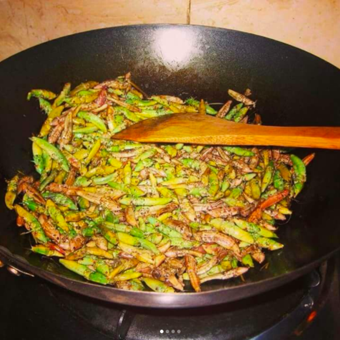
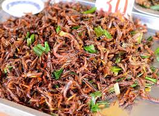

Home
Nsenene Dish


Directions
Gently Pluck of wings and legs or buy when they're already plucked, Soak in cold water and wash 2 or 3 times to remove all the dirtiness
- Transfer the grasshoppers into the pan your going to use for cooking, put on medium heat and start staring.
- Add salt, stir until they become golden brown, add onions and stir for few minutes.
- Serve
Funny how i dont love this dish but its loved by most Ugandans so I added it to the list